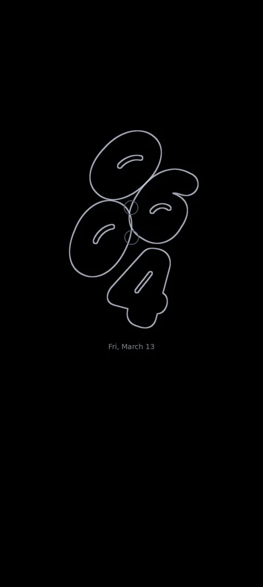

06:04
Wake beautifully.
Thin outlines grow into floating, softly blurred numbers as the wallpaper fades into view.
Soft, floating numbers. Blue petals that come alive. A HyperOS-inspired lock screen moment, recreated for Android.
Free for Android 12 or newer · APK file, about 8 MB · Not on Google Play
Tap Wake / Sleep to preview the transition. This is a browser simulation, not a recording of the installed app.
THE IDEA
Inspired by the magic of HyperOS's animated clock, reimagined as a standalone Android live wallpaper. No root. No system modification. Just a little bit of motion.
✳Everything from the shape of a number to the softness of its glow has a part to play.
Thin outlines grow into floating, softly blurred numbers as the wallpaper fades into view.
Custom-drawn bubble-like number shapes, curved inner slits and carefully placed blue dots.
Deep blue, icy cyan and rich teal petals give the clock a soft, dimensional backdrop.
A glimpse of how Petal Clock looks as your screen wakes up.

These are illustrative renders. The look on your phone can vary slightly by device.
It takes about a minute. Your phone will ask for a permission the first time, because the app is not from Google Play.
Tested on Android 14 · feedback is welcome on GitHub
Tap the big Download PetalClock button on your Android phone. If your browser warns that this type of file can harm your device, choose Download anyway.
Open the downloaded file petalclock.apk. If Android asks, tap Settings and allow installs from this browser, then go back and tap Install.
Open Petal Clock, tap Set as wallpaper, then choose Home screen and lock screen.
Get Petal Clock for free. One tap, no account, no ads.
Free · Android 12 or newer · No root required · Open source on GitHub
Yes, completely free. There are no ads and no account.
Petal Clock is not on Google Play, so Android shows a standard warning for any app installed from a file. You can read every line of the code on GitHub.
No. Petal Clock is a normal Android live wallpaper. It does not touch system files or security settings.
No. Samsung's always-on screen is controlled by the system. Petal Clock draws its outlined-clock look only while the wallpaper is visible.
Android 12 or newer. It has been tested on Android 14.
Yes. It reads your phone's clock and updates every minute.
Change your wallpaper in Settings, then uninstall Petal Clock like any other app.
Only download from this site or the official GitHub page. Do not install copies from other websites.